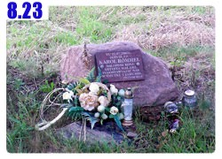
靠在凹凸不平的牆面上，有如芒刺在背很不舒適，凌晨兩點過後，開始改用躺著的方式睡在冷冰冰的地上，睡袋拿來當枕頭，勉強著睡到早上五點。
鬧鐘又時差錯亂的提早一小時響起，同時公寓裡走出一位早起的老婆婆，一開門看到我躺在地上嚇了她一跳。
換來的反應不是趕我走，而是問我要不要到裡面的樓梯間睡覺？
不用了～謝謝，天快亮了，還有一大段路要騎呢，睡覺這種事情，等晚上再來想辦法就好。
撕下一張筆記本的內頁寫了感謝的話：
Last night I say need nothing.
Because your smile is everything.
Thank you
貼在睡覺的樓梯間，希望那位好心的人會看見，在被趕來趕去的夜晚，有一點感覺到華沙人的冷漠，但還是能找到溫暖的人心。
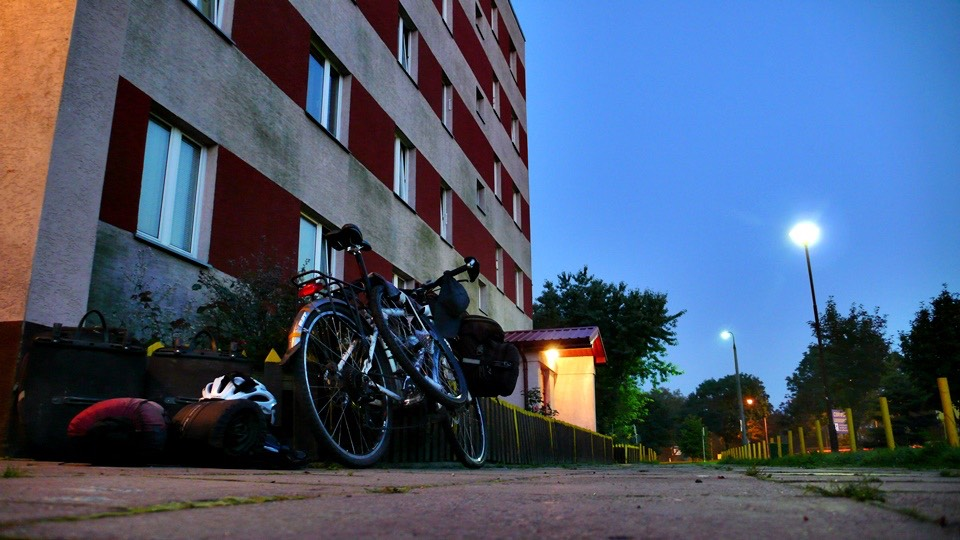
天還濛濛亮，伸個懶腰就準備出發，完全不用收拾任何行李，因為什麼也沒拿出來。
路上車輛稀少，經過幾次睡路邊的經驗，車流量最少的時候是在凌晨三點過後到早上六點這段時間，想躺在路上滾來滾去都沒關係，平常還是別這麼做比較好。
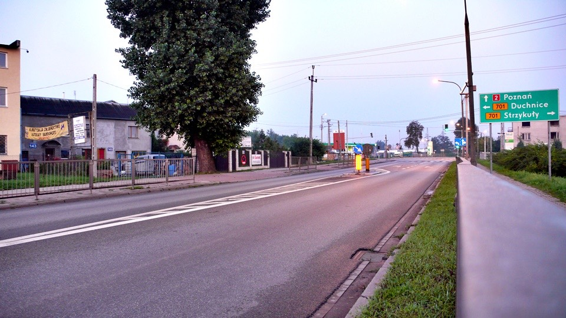
這幾天的早餐都是吃在白俄羅斯最後補給的那幾條蛋糕，真的是一條可以撐一餐，配上自來水、汽水、果汁，有什麼就喝什麼。
身上的茲羅提從進入波蘭換了六十六元之外就沒有多的盤纏，回想起來那間換錢給我的商店真的有點黑心。
三十美金才換給我六十六元，用最爛的匯率最起碼也能換到八十一元，身上的現金不多只好省著花，目標是撐四天開銷直到抵達波茲南為止。
省錢的方式很簡單，多進商店、少進餐廳、旅館的招牌看過就好。
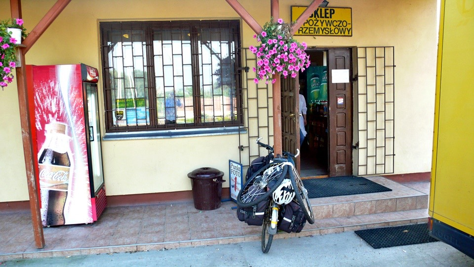
像這樣子買了一大瓶汽水、外加一大瓶的柳橙汁配上兩條麵包也才花十一點五元而已，很划算的價錢。
麵包已經切片，吃起來很方便，口感跟之前吃過的完全不一樣。
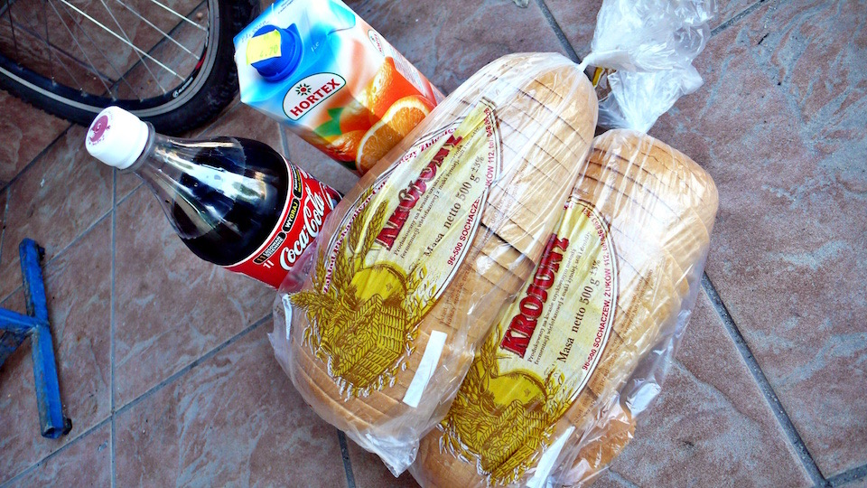
首先是表皮，不同於一般麵包的乾硬，波蘭的麵包表皮很有彈性，很像在吃口香糖的感覺，咬不太斷。
再來是內容，白色鬆軟的麵包口感還不錯，可是很鹹，肯定在揉麵團的時候加了一大堆的鹽巴才會有這種味道。
連白麵包都可以做得這麼鹹，看來波蘭人的口味吃很重。
在啃麵包配果汁的時候，發現商店外頭的牆壁上有水龍頭，昨天晚上睡前沒擦澡，連衣服都沒有換，算是旅行以來最髒的一晚。
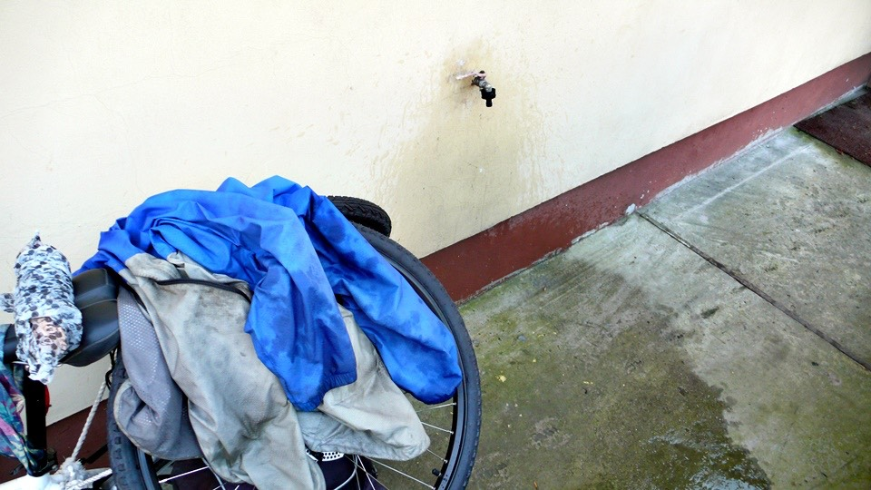
源源不絕的清水供應之下，在這裡舒服的擦個澡，將昨天的疲憊全部洗去，今天又是一個新的開始。
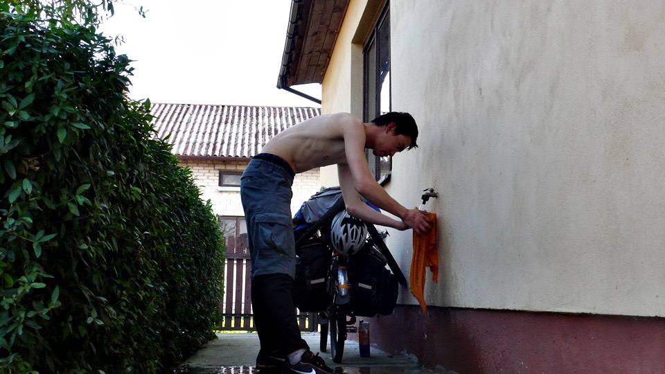
波蘭百分之九十的人口都信奉天主教，教堂處處可見，沒有教堂的地方也會有精美的雕像、小型的神塔。
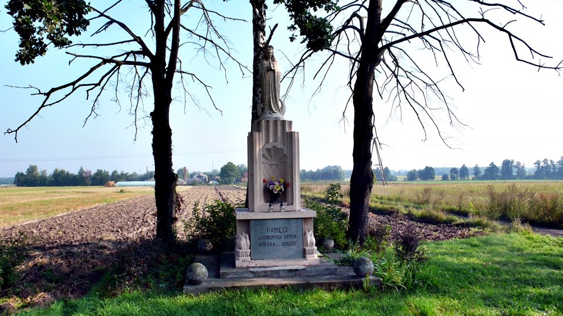
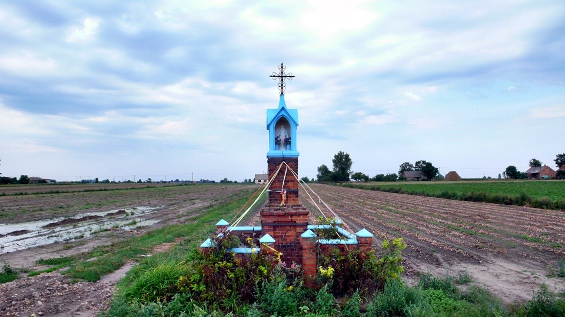
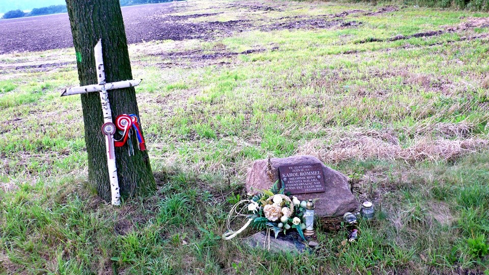
這些東西有一個相同的特色，固定都會放小油燈，造型不一，但隨處可見，連公車等候站也會看到，漆黑的夜晚在地上跟田野亮著燈火的感覺很溫馨。
今天騎車感覺很差，從抵達波蘭的第一天就可以很明顯的感覺到波蘭的路況很好，代價就是修路的情形太普遍。
要連續騎上十公里而沒看見任何施工的路段是很罕見的情形，幾乎整段路都在施工，還是我特別倒楣專挑施工的路段走？
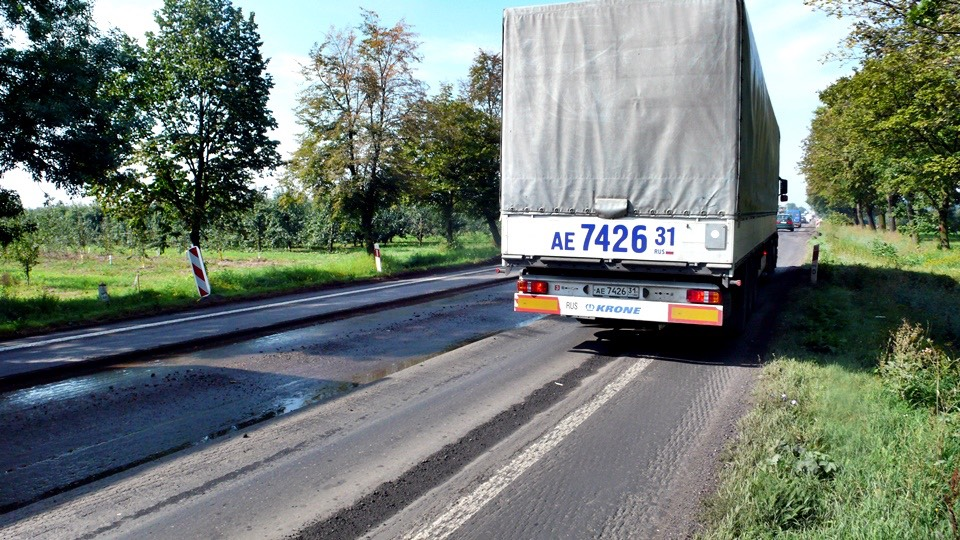
有的時候施工在左邊，大家就往右邊擠，有的時候施工在右邊，大家就往左邊擠，今天很獨特，施工的路段在中間，開車的人只好往兩旁，也就是我的方向擠。
只剩這麼小的路可以走，根本就不能指望後面的車子會繞過我或是讓我先行，路實在太小了，大卡車通過的時候是完全沒有空隙的。
這一段十幾公里的施工路面，我要一直停靠在旁邊的草地上等著綿延不絕的車流通行，稍微有空檔的時候才能騎上一小段，然後繼續在草地上苦等。
老是這樣子根本就沒完沒了也騎不了車，之後想到一個好方法，既然不能騎，那不如就把車子牽到施工的中央路段，用牽著走都比停在路邊傻等要來得快。
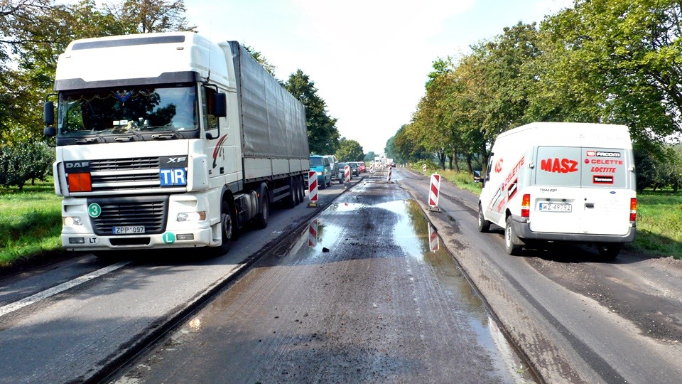
沒有圍欄的果園長了各式各樣的水果，最普遍是蘋果，很大一顆又紅通通的，其它像是桃子、葡萄、李子也都有栽種，只要伸出手拔愛吃多少就有多少。
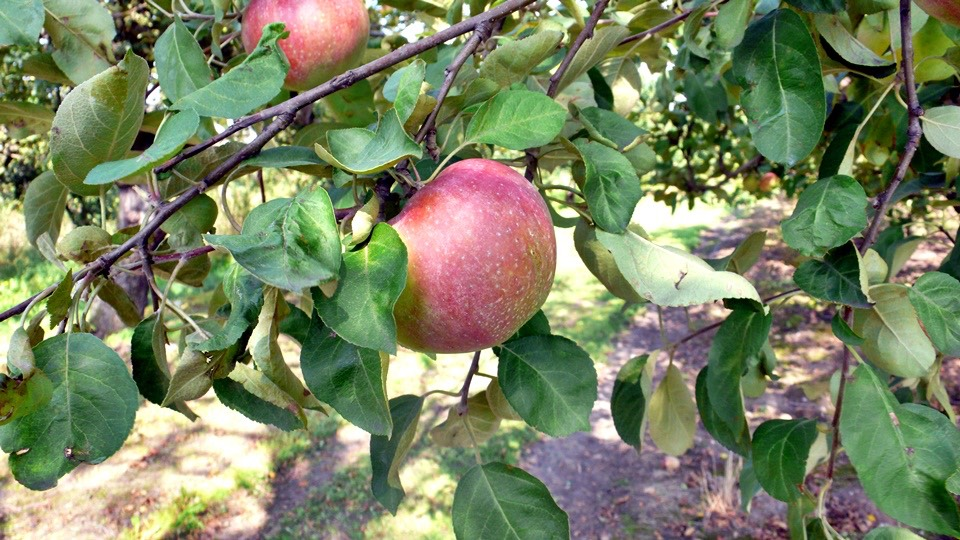
但這樣算是偷竊的行為喔，想吃水果的話等看到露天的攤販再去買吧。
中午的時候在施工路段的某一段發現一間因為工程影響而生意冷清的餐廳，今天的休息處就是它了。
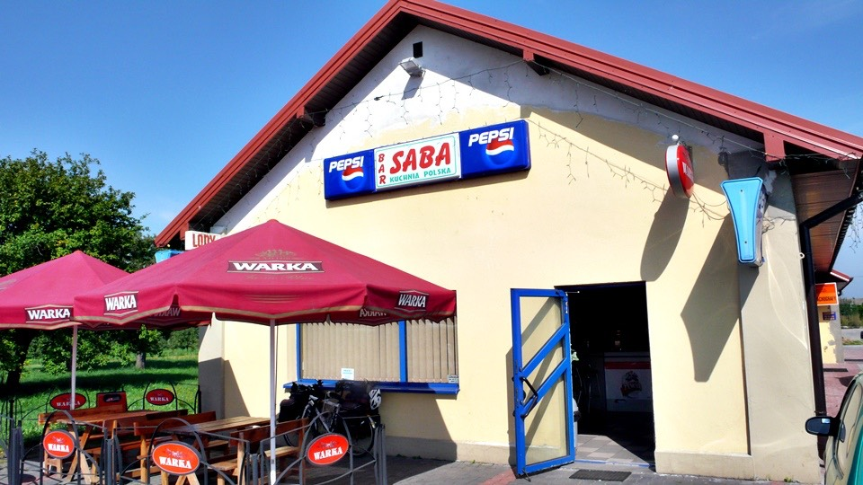
菜單上都是波蘭文，看得懂的都是不想吃的速食，憑運氣點了一樣五元的餐點，送上來就是一碗有很多切片香腸的熱湯配上一大塊麵包。
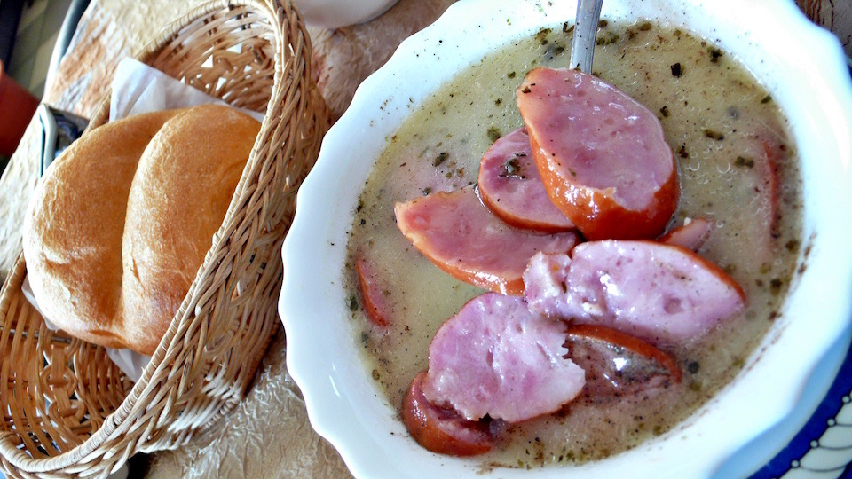
整碗湯有半碗都是美味的香腸，好吃得連舌頭都要吞下去，跟麵包一樣，這個湯真是鹹到很誇張。
之前吃飯我都會灑上一堆的胡椒跟鹽巴之後才開動，在波蘭完全不需要這麼做，拿著水壺跟老闆娘要杯水來喝比較實際。
在餐廳裡度過最炎熱的中午時段，一直待到下午三點才離開，這段時間當然就是在寫遊記，髒兮兮的衣服也順便洗好拿去大太陽下曝曬。
騎車可以騎快一點，吃飯也可以吃趕一點，唯獨寫遊記我怎麼都快不起來。
兩個小時能夠寫完一篇就高興得要跳起來鼓掌，花上四個小時以上才整理出一篇也是常有的事。
路上經過的紅色磚瓦尖塔教堂，看起來毒辣的太陽其實還算涼爽，騎車的時候氣溫不會超過三十度。
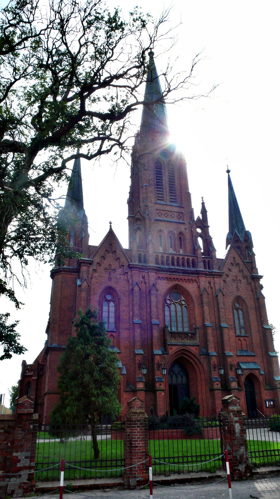
這是一個很不荒涼的國家，跟中國、哈薩克、俄羅斯、白俄羅斯這些一路上經過的國家相比，它顯得太熱鬧了。
當然一樣是有整片的田野，可是要出現那種幾十公里甚至一百公里都沒有人煙的情形實在不可能，房舍、商店、加油站、旅館沿路都是。
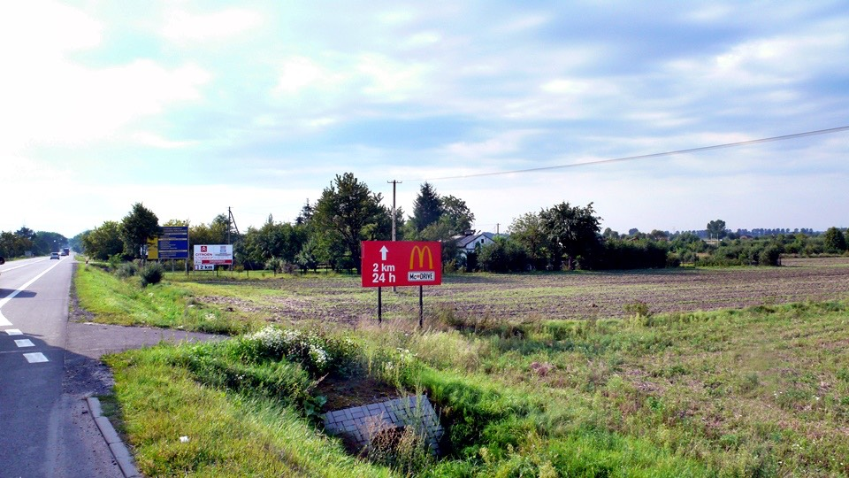
當我覺得這邊看起來有點荒涼的感覺，馬上就出現前方兩公里有麥當勞可以吃的標誌，如果身上的銀兩足夠的話，在波蘭要餓肚子或是睡路邊是沒可能發生的。
當然麥當勞不是我的停靠站，繼續往波茲南的方向騎，昨天晚上在華沙大迷路，整個少騎了很多距離。
早上起床的時候距離波茲南還有三百公里，所以今天至少也得騎上一百五十公里，剩下一半給明天努力，如果想早一點抵達波茲南，那今天就要更努力才行。
到這間商店進行今天最後一次採買，看著店裡的價目表，衡量一下價錢之後買了一瓶小牌子的檸檬汽水，是這間店除了礦泉水之外最便宜的飲料。
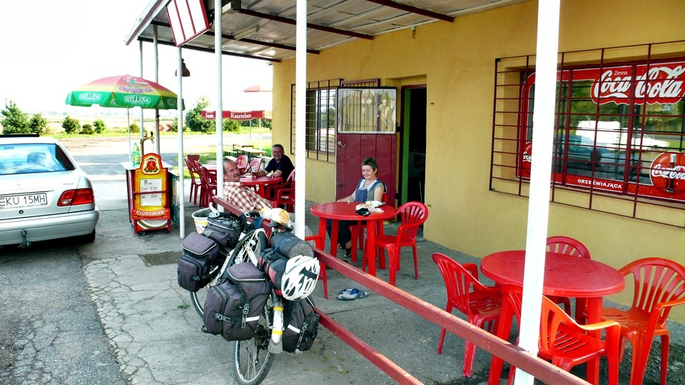
那麼大一罐很難帶著走，在陰涼的屋簷下喝不冰的汽水止渴，空蕩蕩的水壺也在店裡裝滿自來水準備晚上可以洗臉加刷牙兼擦澡。
剛好在店裡有一位穿著紅白方格襯衫的大叔，看我猛灌汽水，問我肚子餓不餓？
然後叫老闆娘煮了一碗番茄湯麵請我吃。
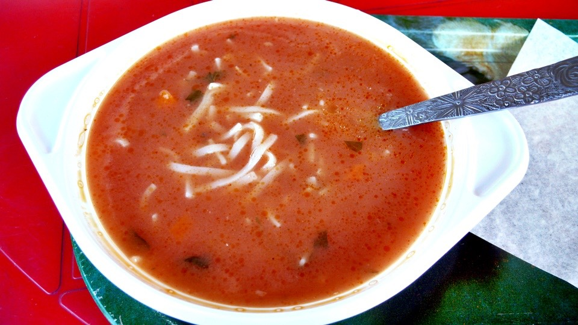
雖然只是簡單的食物，可是能吃到熱食的感覺好幸福，酸酸的番茄湯滋味很甜美，總算沒有午餐那一碗香腸湯那麼鹹。
拿出自己買的麵包配著吃，晚餐就這麼解決掉了，多謝好心的大叔招待。
準備要走的時候老闆娘又拿出了一瓶礦水水來送給我。
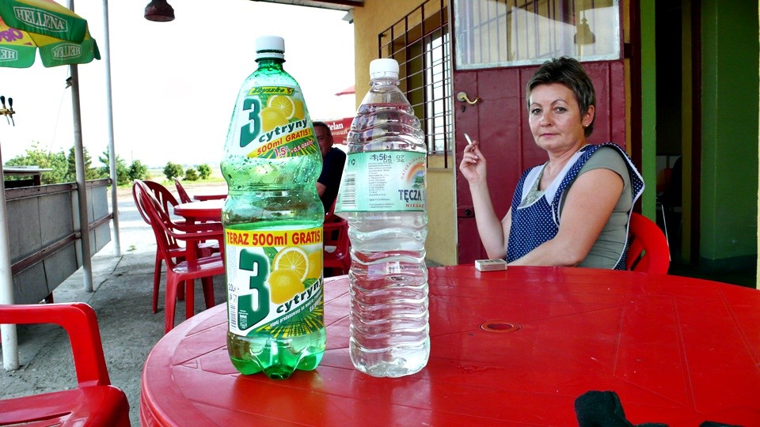
來到這裡的時候是空空如也的水壺和餓扁的肚子，離開的時候吃得飽飽的，兩個水壺都裝滿水，還多了一瓶一點五公升的礦泉水外加半瓶檸檬汽水。
謝過大家之後繼續往西邊騎車，還沒達到今天一百五十公里的目標，加油吧～
像這樣明明太陽還沒下山，卻已經被烏雲給遮蔽，搞的天空像是核彈爆炸一樣的畫面，就可以肯定今天晚上一定會下雨，準確度高達九成。
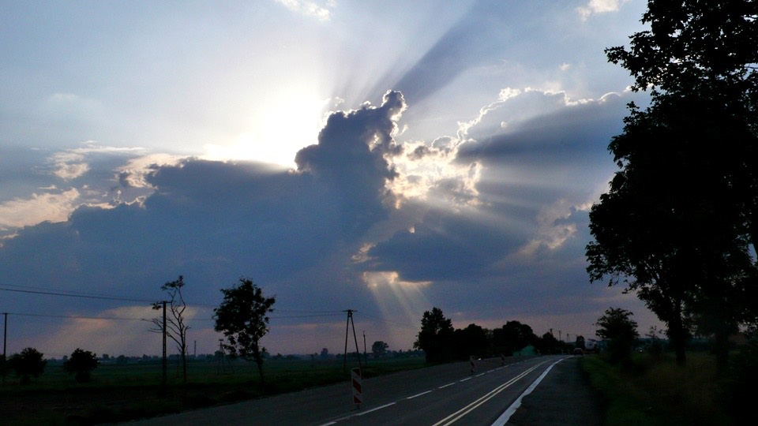
看著這樣的天空，知道今天天黑的時間會比較早，而且晚上得找個有屋頂的地方才能好好的睡上一覺，要住旅館嗎？
別開玩笑了，明天就可以到波茲南，幹嘛今天要住旅館，再說也沒那個預算，邊騎車邊注意有沒有好的住宿地點吧。
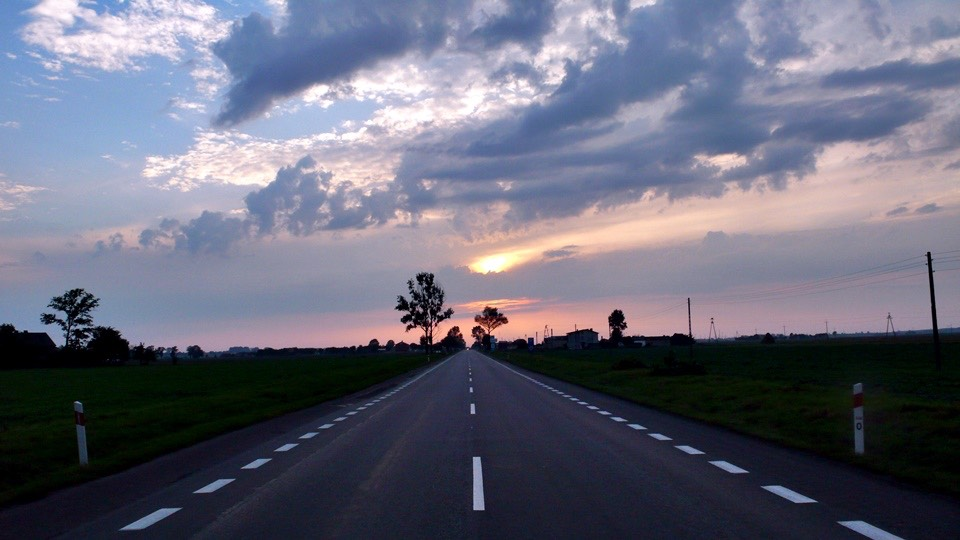
別了～太陽公公，今天又要比你晚睡了。明天我一定要賴床，絕對不要又比你早起。
天黑前發現疑似空屋的建築，外觀超級完整，窗戶也沒有破損，但感覺就是無人居住，先查看一下再說。
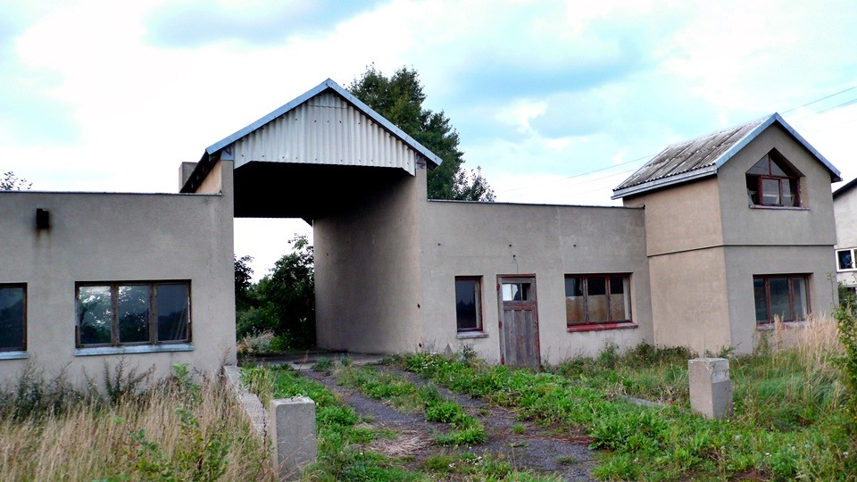
繞過屋子從後面有個小徑可以走到屋子裡頭，小徑很隱蔽，地上都是雜草，頭上則是水蜜桃樹，連入口都要被遮蔽住，看來這邊沒什麼人會進出。
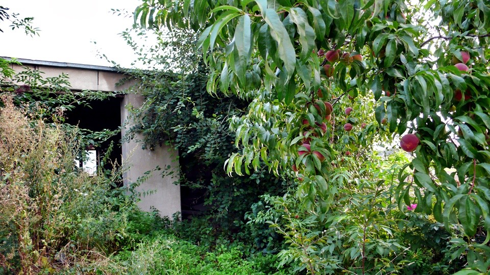
進到裡面一看的確是空屋沒錯，大概也是穀倉或是倉庫這一類的，堆放了一些木頭和麥梗，地面有一塊長方形的平整處，這根本就是為我準備好的床。
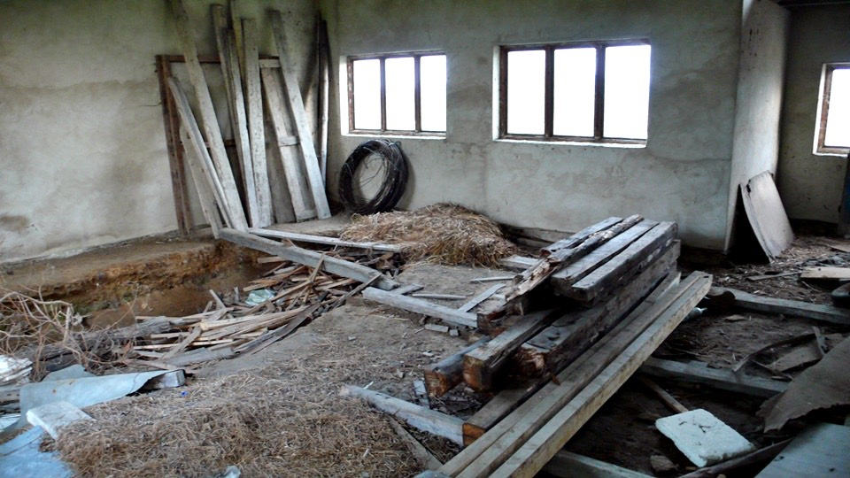
查看完畢確定可以露營之後就將小多牽進來，卸下行李搭建起過夜的處所，睡墊鋪在麥梗上相當的柔軟，晚上不會睡得腰痠背痛了。
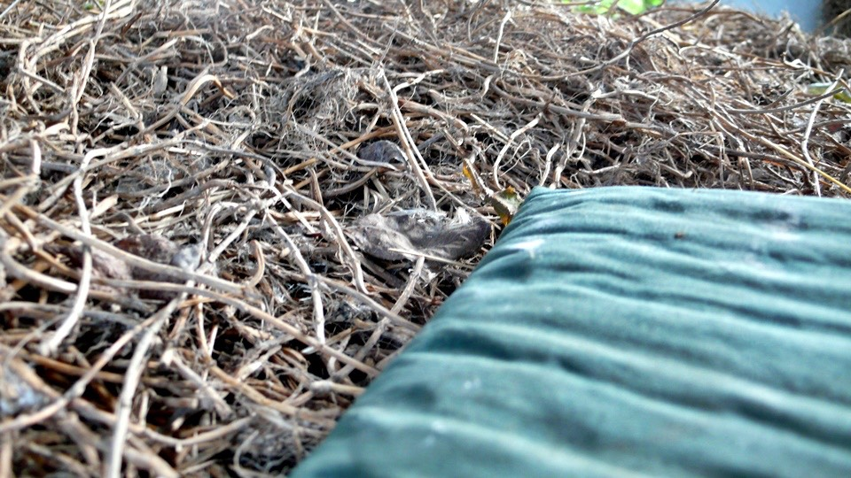
擦澡換裝的時候，外頭就下起滴滴答答的雨，一小時後變成中雨，雨勢越來越大，心裡捏一把冷汗。
還好已經找到落腳處了，這時候如果還在路上該怎麼辦才好？
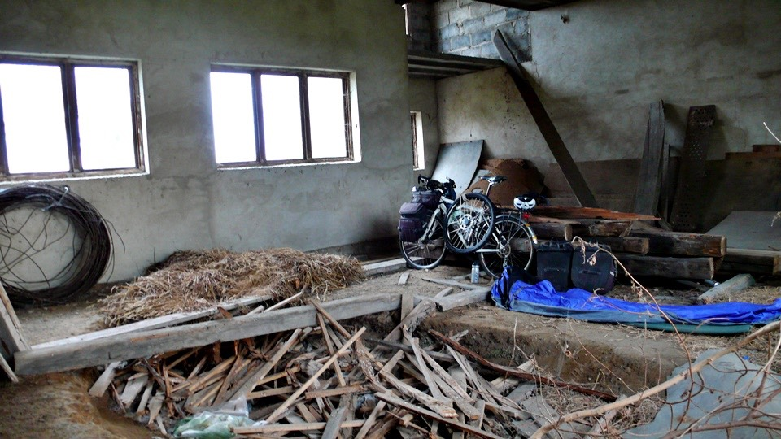
從睡覺的地方有窗戶可以探出去看馬路邊的情況，進來的入口則像這樣被綠色的植物給擋得滿滿的，好像是流落在荒島的小屋那種感覺。
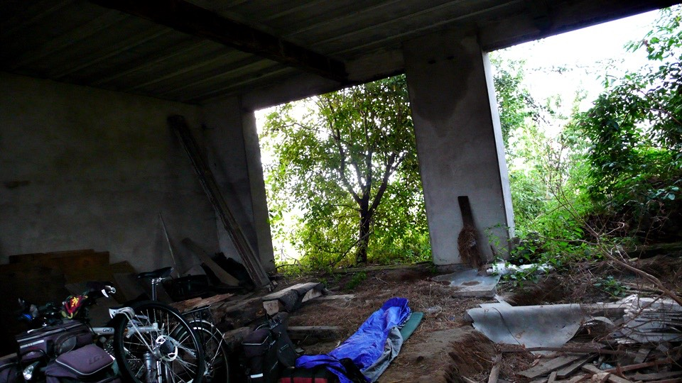
晚上睡得很安心，昨天幾乎沒睡到，前天則是失眠，所以今天一躺下去就呼呼大睡，夜裡雨聲越來越大。
雨水一波一波的傾瀉，像海嘯整個打下來的感覺，配上轟隆隆的雷聲，連續兩天晚上都在颳颱風。
好在爛天氣發生在夜晚，白天很適合騎車，有多少雨就盡量下吧，到了白天的時候記得停下來，還我藍天白雲的好天氣。
繼續閱讀：8.24 小鵝～我來了 :D
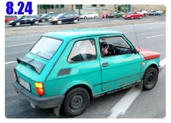
波蘭-茲羅提－ 1：12 台幣
8.23
總計：25.5元
商店果汁、可樂、麵包兩條11.5元、午餐香腸湯配麵包5元、礦泉水3.5元、商店檸檬汽水5.5元